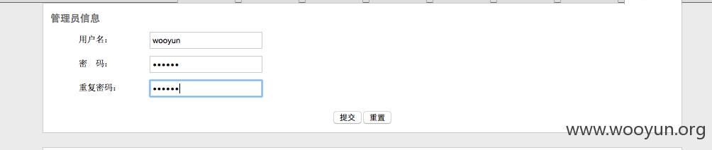
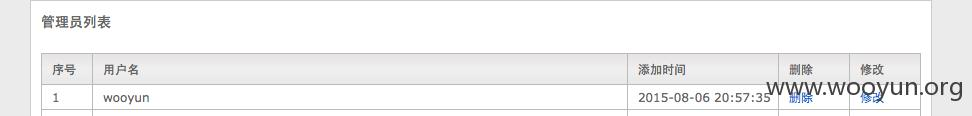
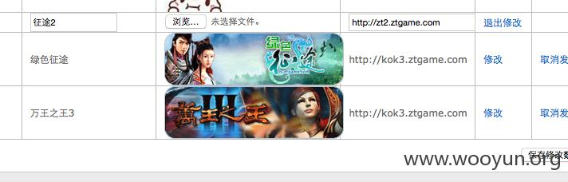
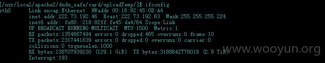
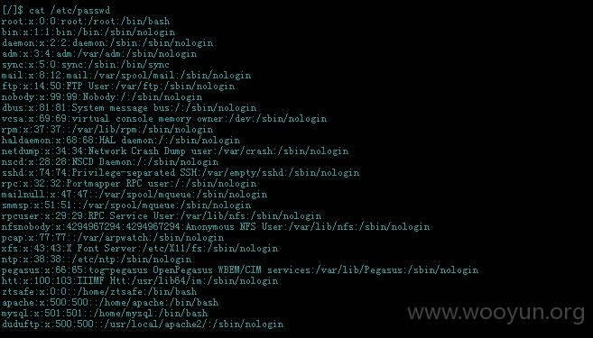
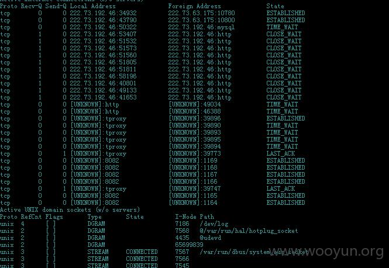
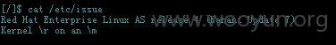
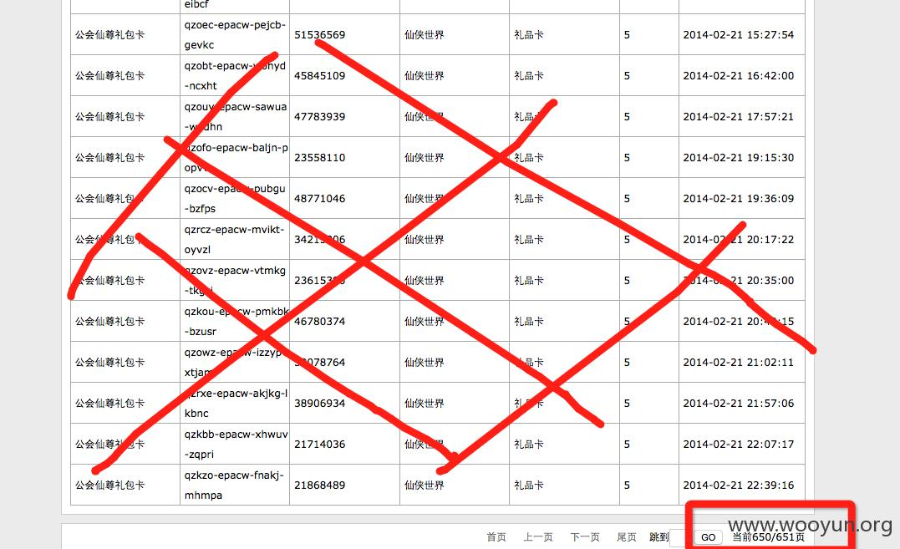

漏洞概要
关注数(10)
关注此漏洞
漏洞标题： 巨人网络某站GETSHELL（可随意添加管理员&10000+数据泄露）
提交时间： 2015-08-06 22:37
公开时间： 2015-09-21 19:52
漏洞类型： 未授权访问/权限绕过
危害等级： 高
自评Rank： 20
漏洞状态：
厂商已经确认
Tags标签：
无
漏洞详情
披露状态：
2015-08-06： 细节已通知厂商并且等待厂商处理中
2015-08-07： 厂商已经确认，细节仅向厂商公开
2015-08-17： 细节向核心白帽子及相关领域专家公开
2015-08-27： 细节向普通白帽子公开
2015-09-06： 细节向实习白帽子公开
2015-09-21： 细节向公众公开
简要描述：
巨人网络分站getshell（可随意添加管理员&10000+数据泄露）
详细说明：
巨人网络分站getshell（可随意添加管理员&10000+数据泄露）
弱口令
admin/admin
进入后台
任意添加管理员


虽然前台有验证，但抓包可绕过

可getshell
shell




cat /etc/passwd
redhat as4.7

10000+数据泄露，每页20条，一共600多页

不继续深入，点到为止，赶快修复吧
漏洞证明：
修复方案：
版权声明：转载请注明来源 Mr.Q@乌云
漏洞回应
厂商回应：
危害等级：低
漏洞Rank：5
确认时间：2015-08-07 19:50
厂商回复：
......
最新状态：
暂无
漏洞评价：
对本漏洞信息进行评价，以更好的反馈信息的价值，包括信息客观性，内容是否完整以及是否具备学习价值
漏洞评价(共0人评价):
评论
-
2015-08-08 15:45 |
乌云首席鉴黄师
( 普通白帽子 |
Rank:121 漏洞数:43 | 妈妈，我要上电视)
0
-
2015-09-22 08:38 |
心云
( 路人 |
Rank:2 漏洞数:2 | 学好技术,读好书，做好人。)
0